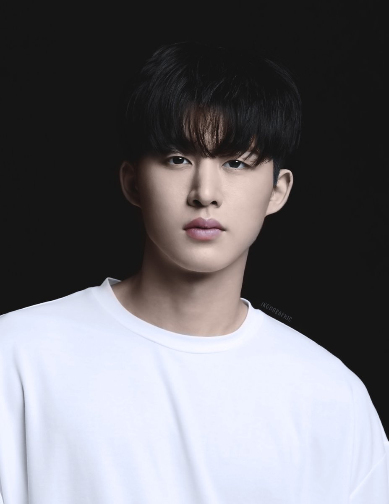
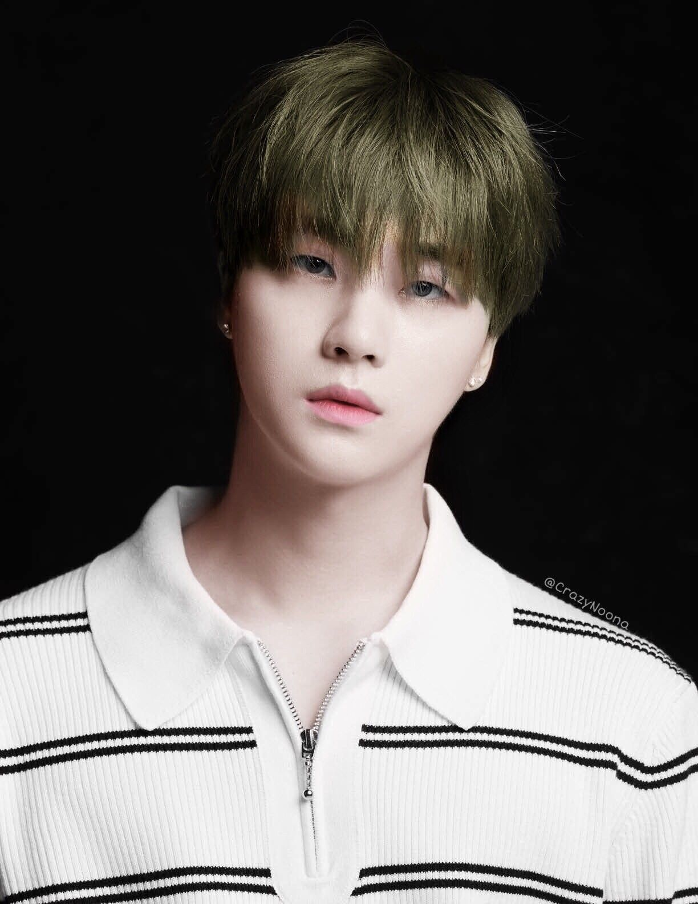
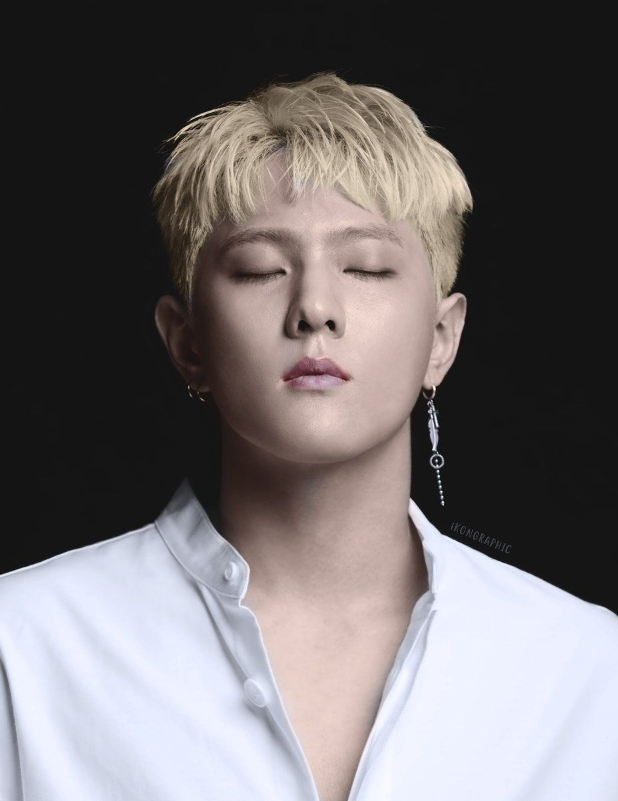
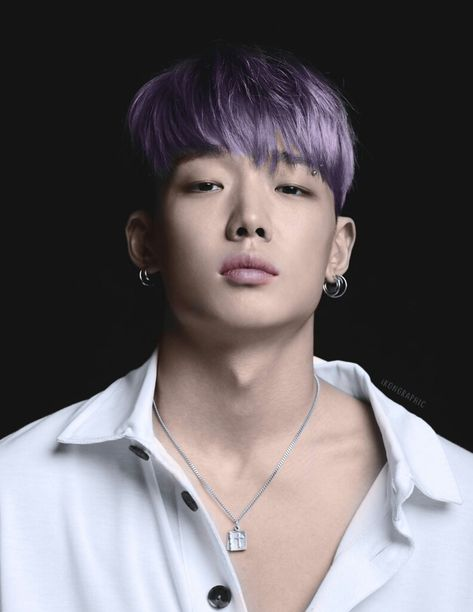
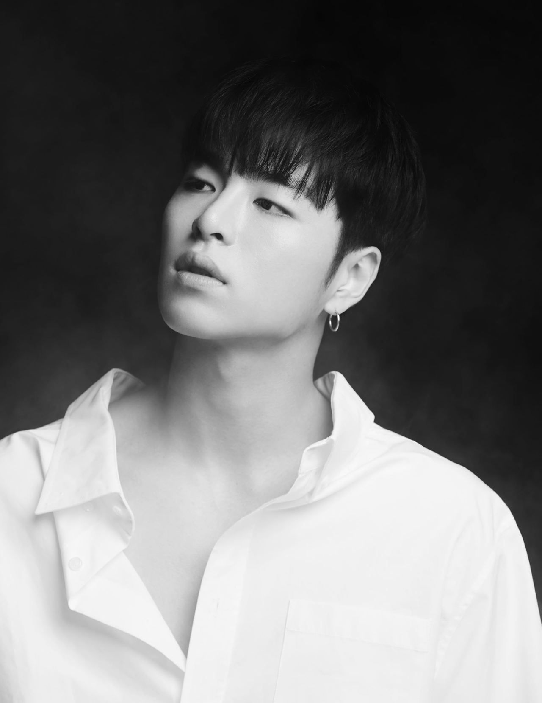
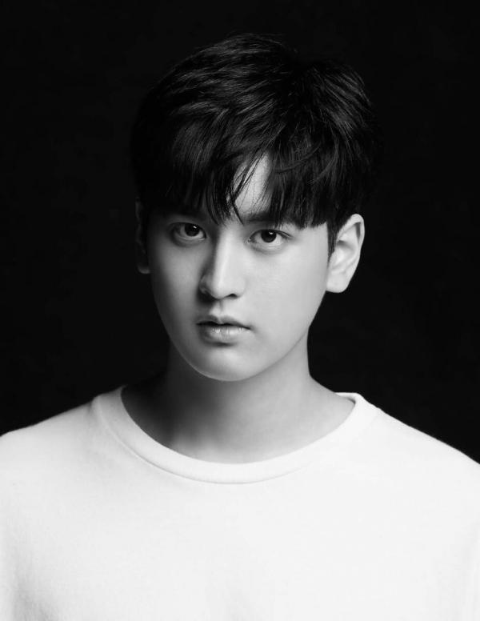

|
|
Kembali
|
|
|
BIODATA
MEMBER IKON
|
|
1. KIM HANBIN

|
Nama panggung: B.I
Nama Lahir: Kim Han Bin
Posisi: Leader, Lead Rapper, Lead Dancer, Vocalist, Center
Tanggal Lahir: 22 Oktober 1996
Tempat lahir: Seoul, Korea Selatan
Zodiak: Libra
Tinggi: 177 cm
Golongan Darah: O
Instagram:@shxxbi131
|
|
2. KIM JHINWAN

|
Nama Panggung: Jay (sebelumnya dikenal sebagai Jinhwan)
Nama Asli: Kim Jin Hwan
Posisi: Main Vocalist, Lead Dancer
Tanggal Lahir: 7 Februari 1994
Tempat lahir: Jeju-do, Korea Selatan
Zodiak: Aquarius
Tinggi: 165 cm
Golongan Darah: A
Instagram: @gnani_____
|
|
3. SONG YUNHYEONG
|
Nama Panggung: Song (sebelumnya dikenal sebagai Yunhyeong)
Nama Lahir: Song Yoon Hyung
Posisi: Lead Vocalist, Center, Visual
Tanggal Lahir: 8 Februari 1995
Zodiak: Aquarius
Tinggi: 177 cm
Golongan Darah: A
Instagram: @sssong_yh
|
|
4. KIM DONGHYUK

|
Nama Panggung: DK (sebelumnya dikenal sebagai Donghyuk)
Nama Lahir: Kim Dong Hyuk
Posisi: Main Dancer, Vokalist
Tanggal Lahir: 3 Januari 1997
Zodiak: Capricorn
Tinggi: 175 cm
Golongan Darah: O
Instagram: @_dong_ii
|
|
5. KIM JI WON

|
Nama Panggung: Bobby
Nama Lahir: Kim Ji Won
Posisi: Main Rapper, Vocalist, Face of the Group
Tanggal Lahir: 21 Desember 1995
Zodiak: Sagitarius
Tinggi: 180 cm
Golongan Darah: O
Tempat kelahiran: Seoul, Korea Selatan, namun dibesarkan di Virgina, Amerika Serikat
Instagram: @bobbyindaeyo
|
|
6. KOO JUNHOE

|
Nama Panggung: Ju-ne (sebelumnya dikenal sebagai Junhoe)
Nama Lahir: Koo Jun Hoe
Posisi: Main Vocalist, Dancer
Tanggal Lahir: 31 Maret 1997
Zodiak: Aries
Tinggi: 182 cm
Golongan Darah: A
Instagram: @juneeeeeeya
|
|
7. JUNG CHANWOO

|
Nama Lahir: Jung Chan Woo
Nama Panggung: Chan (sebelumnya dikenal sebagai Chanwoo)
Posisi: Vokalist, Maknae
Tanggal Lahir: 26 Januari 1998
Zodiak: Aquarius
Tinggi: 180 cm
Golongan Darah: A
Instagram: @chan_w000
|
|
|
|
Copyright © Farah Syadza
|